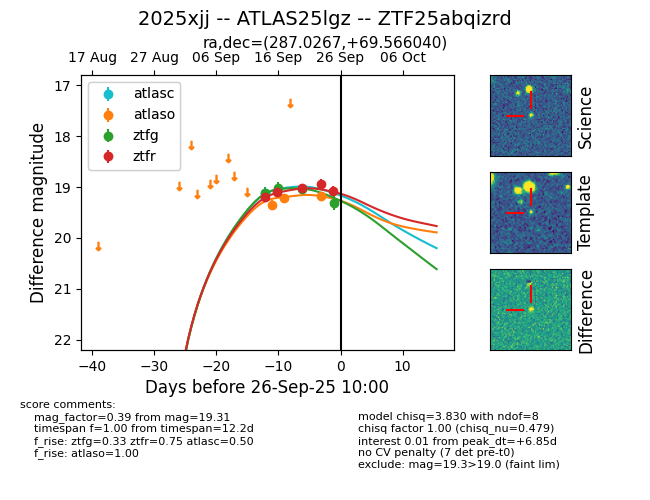
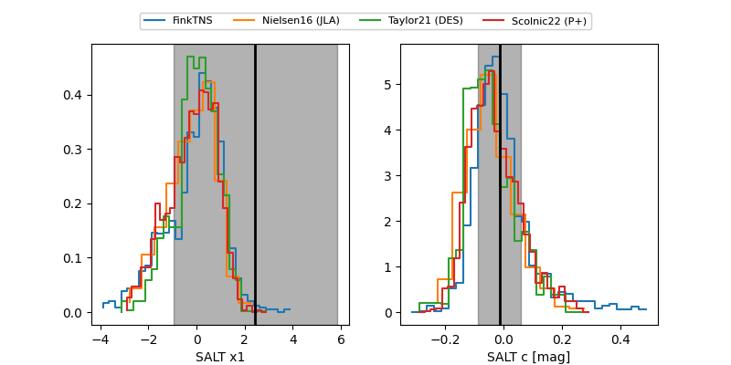

FINK: ZTF25abqizrd
Lasair: ZTF25abqizrd
ALeRCE: ZTF25abqizrd
TNS: 2025xjj
YSE: 2025xjj
ZTF25abqizrd (ztf,fink)
2025xjj (tns,yse)
ATLAS25lgz (atlas)
equatorial (ra, dec) = (287.0267,+69.56604)
galactic (l, b) = (100.5498,+23.87307)


last atlasc=19.13, atlaso=19.18, ztfg=19.31, ztfr=19.07
1 atlasc, 3 atlaso, 4 ztfg, 5 ztfr detections